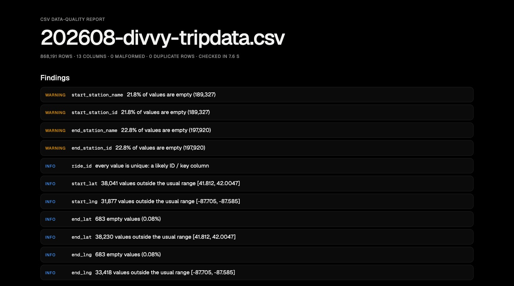

Java · Data quality · 2026-10
CSV Data-Quality Checker
A Java tool that reads any CSV and reports what's wrong with it (empty values, wrong types, broken rows, duplicates, unusual numbers) before anyone analyses it.

This is a profiler, not a validator: it infers what each column should be and flags what doesn't fit. You can't yet give it rules such as "price must be at least 0". Outlier counts are approximate for columns with more than 100,000 numbers.
01 — The problem
Every analysis starts with a file someone else made, and most bad numbers come from bad data, not bad math: a column that is one-fifth empty, a date typed as text, a row with a missing comma, the same record twice. An analyst usually finds these one at a time, halfway through a report. Can one command look at any CSV, of any size, and list its problems up front in plain language?
02 — What I built
A command-line tool in plain Java 21, using only the standard library. java -jar dq.jar data.csv writes a one-page HTML report for people and a JSON file for programs, and prints the findings.
- Reads the file once, as a stream: memory stays small, so an 868,000-row file takes about 7 seconds.
- Per column: empty values, inferred type with the values that don't fit, distinct count, range, mean and spread, unusual values.
- Per file: rows with the wrong number of fields, exact duplicate rows, likely ID columns, columns where every value is the same.
- Exit codes 0 / 1 / 2 (clean / warnings / errors), so a data pipeline can refuse a bad file.
- Checked twice: 32 Java tests plus a separate Python script that recounts every number.
03 — How it was built
- 01
A CSV reader that doesn't trust the file
Splitting on commas breaks on
"gift, wrapped". The reader follows the CSV standard (RFC 4180) one character at a time. It handles quoted fields, doubled quotes inside them, commas and even line breaks inside quotes, and Windows line endings. A quote that never closes stops the run with an error. Otherwise the rest of the file would silently disappear into one giant field. Nine tests cover these cases.if (c == '"') { if (peek() == '"') { read(); field.append('"'); } // "" = one quote else inQuotes = false; } - 02
Learn each column in one pass
Every value is tested against integer, decimal, date-time, date and true/false patterns. A column gets the most specific type that at least 98% of its values fit, so one stray
oopsin 100 numbers is reported as a misfit with the example, not hidden. Distinct values are counted as 64-bit hashes in a plainlong[]table: 8 bytes per value, not a full Java string. Mean and spread use Welford's one-pass method. Quartiles come from a fair random sample of up to 100,000 numbers (reservoir sampling).double d = x - mean; // Welford: running mean and variance mean += d / numbers; m2 += d * (x - mean); - 03
Whole-file checks and the report
Rows with the wrong number of fields are counted with their line numbers. Each full row is hashed to catch exact duplicates. A second pass counts numbers outside Tukey's fences, 1.5 × the interquartile range beyond the quartiles. The findings become plain sentences sorted errors, then warnings, then info. They are written as an HTML page and a JSON file, and the exit code tells a pipeline how bad it was. A generated file with exactly one of each problem tests the whole thing.
- 04
Run it on real data, then check it in Python
Two real files: a month of Chicago bike trips (868,191 rows) and the Florida flights table from my Power BI project (635,459 rows).
check.pyrecounts them independently with Python'scsvmodule and exact sets. Rows, malformed rows, duplicates, and every column's empty count, distinct count, min and max (plus the mean of number columns) all agree: 143 comparisons. The run also caught two bugs in my own code. The JSON was rounding the date key20250801to20250800, and the duplicate message suggested copies where there were none. - 05
Read the findings like an analyst
The tool flags; a person decides. The 13 "duplicate" flights looked like copies, so I looked one up in the raw government file. American Airlines flights 2524 and 2823 left Miami for Dallas on the same day, both in the 6 pm hour. They are different flights that look identical because the table keeps only the hour. The duplicate message now says to check exactly that. In the same way, a 98% empty cancel-code column is correct: only cancelled flights have a code.
04 — Results
| Divvy trips, Aug 2026 | Florida flights | |
|---|---|---|
| Rows × columns | 868,191 × 13 | 635,459 × 17 |
| Time (M3 Pro) | about 7 s | under 3 s |
| Malformed rows | 0 | 0 |
| Exact duplicate rows | 0 | 13 (different flights) |
| Key column found | ride_id | none |
| Checks matching the Python recount | 59 / 59 | 84 / 84 |
- Bike trips: 21.8% of rides have no start station, and every one of them is an e-bike left outside a dock. 173 rides that started on July 30–31 sit in the August file. The SQL project had to handle both: How Chicago Rides.
- Flights: 11,371 flights were cancelled and exactly 11,371 have a cancel code. The delay-cause columns are filled for 152,475 of the 152,476 flights that arrived 15+ minutes late, so one late flight has no cause breakdown.
- Outliers are approximate when a column has more than 100,000 numbers. They were exact in 15 of 17 such columns and off by 1.6% and 2.1% in the other two.
Reports: bike trips · flights · an 11-row file with planted problems.
05 — What I'd do next
- A rules file ("price ≥ 0", "state in a list", "date not in the future") so it validates as well as profiles.
- Exact quartiles for big columns with a second sorting pass on disk.
- Check that dates are real calendar dates, and detect file encodings other than UTF-8.